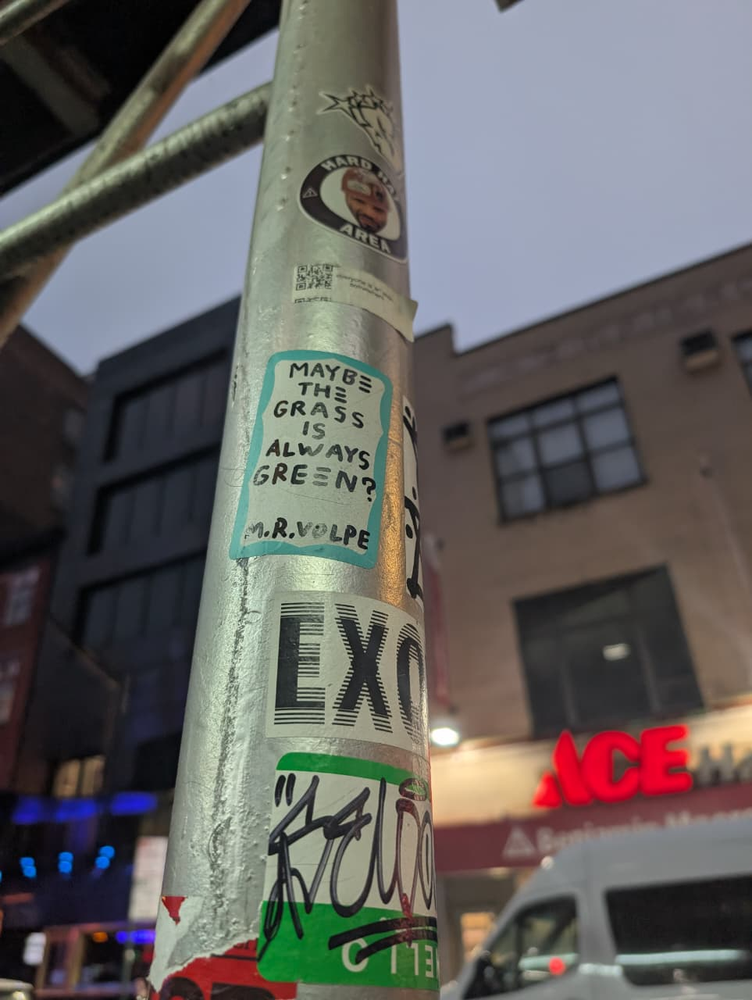

Breachy-270
Takes from a shelf with shaky stability because change is the only constant.

Just some pictures from my gallery.
From The Archives
- The Absurdity of the Perimeter: Kafka's The Trial and Zero Trust Architecture
- The Fragility of Interconnection: Forster's The Machine Stops and Cascading API Risks
- Facing the Incident Triage: Camus' The Stranger and Existential Incident Response
- The Digital Dorian Gray: Web Application Security and the Illusion of the Front-End